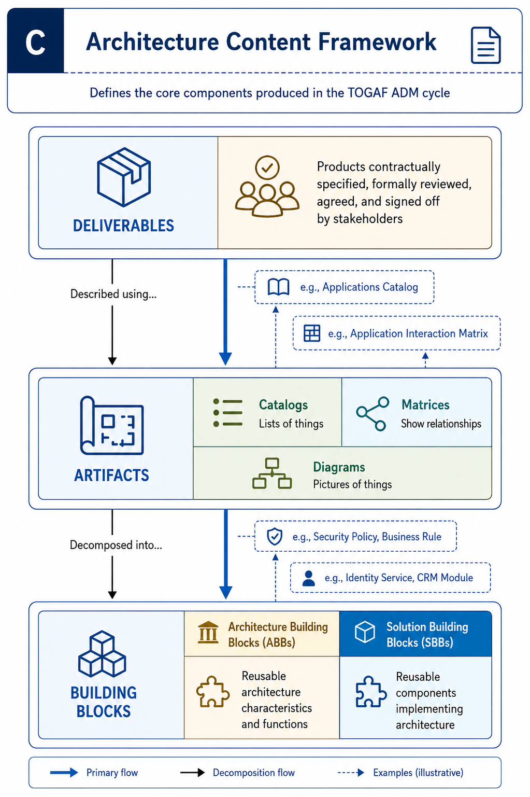
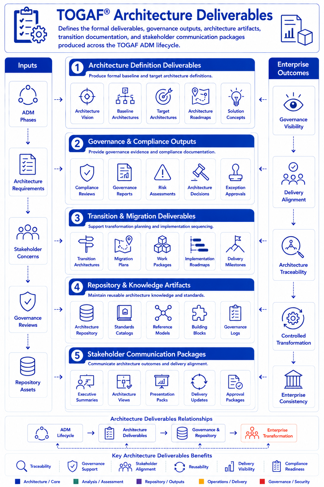
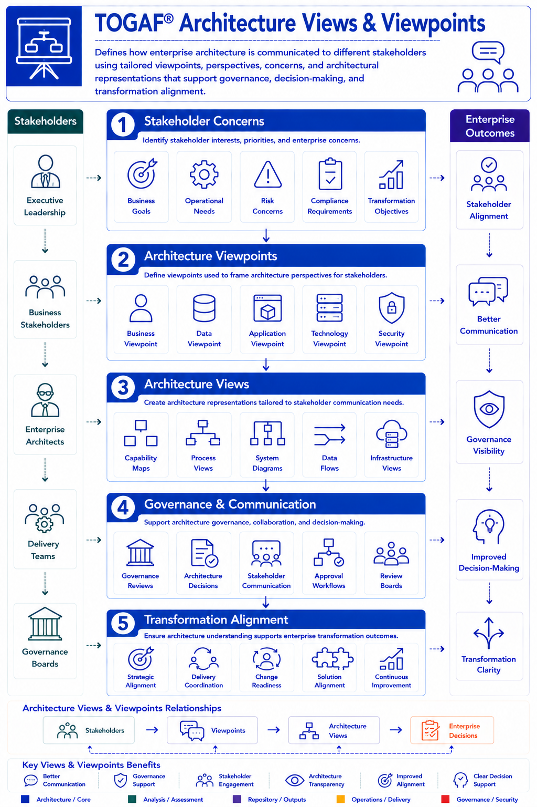
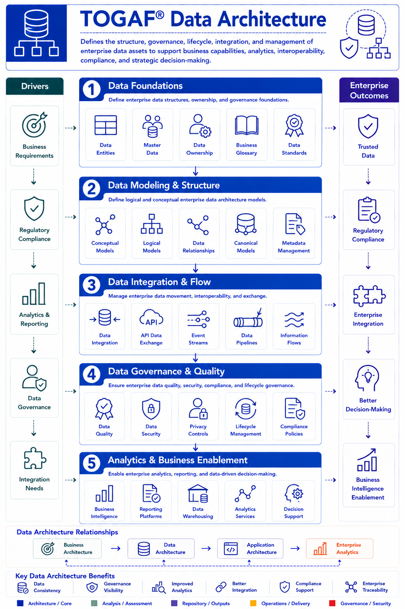

Architecture Content & Structure
8 diagrams
TOGAF Architecture Content Framework
Hierarchical framework organising deliverables into metamodel categories, artifacts, and building blocks.

TOGAF Architecture Deliverables
Formal ADM deliverables: architecture definitions, governance artifacts, transition plans, and compliance outputs.

TOGAF Architecture Artifacts
Catalogs, matrices, and diagrams used throughout the ADM lifecycle to document and govern enterprise architecture.

TOGAF Architecture Metamodel
Structural relationships between business, data, application, and technology elements for consistency and traceability.

TOGAF Architecture Views & Viewpoints
How stakeholder concerns map to architecture viewpoints, views, governance communication, and transformation alignment.

TOGAF Architecture Partitioning
How enterprise architectures are separated across strategic, segment, and solution levels for governance and scalability.

TOGAF Business Architecture
Baseline and target business capabilities, value streams, organisational structures, and processes supporting enterprise strategy.

Data Architecture
Structure, governance, lifecycle, integration, and management of enterprise data assets.